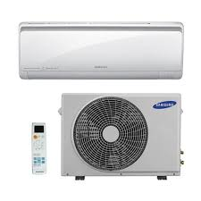

Aire acondicionado
El aire acondicionado es un electrodoméstico de climatización diseñado para controlar la temperatura y la humedad del aire en espacios interiores, proporcionando un ambiente fresco y confortable durante los meses calurosos. Funciona extrayendo el aire caliente del interior de una habitación y reemplazándolo con aire fresco y más frío.
Es importante realizar un mantenimiento regular del aire acondicionado para garantizar su correcto funcionamiento y prolongar su vida útil. Esto puede incluir limpieza de filtros de aire, verificación de niveles de refrigerante, inspección de componentes mecánicos y eléctricos.
La eficiencia energética de un aire acondicionado se mide por su coeficiente de eficiencia energética (CEE). Los aires acondicionados con una alta calificación de eficiencia energética consumen menos electricidad para proporcionar la misma cantidad de enfriamiento, lo que puede resultar en ahorros significativos en los costos de energía a largo plazo.
